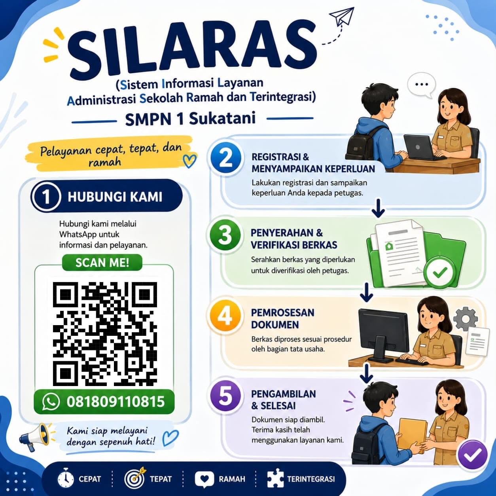

01
SI PRESTASI
Sistem informasi pencatatan, dokumentasi, verifikasi, dan publikasi prestasi siswa maupun sekolah.
Buka SI PRESTASI →Satu portal untuk mengelola prestasi, persuratan, pembelajaran, dan informasi sekolah secara lebih cepat, tertib, transparan, dan terintegrasi.
Sistem informasi pencatatan, dokumentasi, verifikasi, dan publikasi prestasi siswa maupun sekolah.
Buka SI PRESTASI →Layanan persuratan digital untuk pengajuan, disposisi, pengarsipan, dan pemantauan status surat.
Buka SI SURAT →Pusat layanan pembelajaran dan informasi akademik untuk mendukung ekosistem belajar yang aktif dan kolaboratif.
Buka SI PANDAI →| Memuat surat... |
| No | NIS | Nama Siswa | Kelas | Status Kehadiran | Keterangan |
|---|---|---|---|---|---|
| Login guru piket terlebih dahulu. | |||||
| No | NIP | Nama Guru | Jabatan/Mapel | Status Kehadiran | Keterangan |
|---|---|---|---|---|---|
| Login Tata Usaha terlebih dahulu. | |||||
| No | NIP | Nama Guru | Jabatan | Hadir | Izin | Sakit | Dinas | Alpa | Total |
|---|---|---|---|---|---|---|---|---|---|
| Pilih bulan lalu klik "Tampilkan Laporan". | |||||||||
| Kelas | Hadir | Sakit | Izin | Alpa | Total |
|---|---|---|---|---|---|
| Belum ada data. | |||||
| No | NIS | Nama | Hadir | Sakit | Izin | Alpa | Total |
|---|---|---|---|---|---|---|---|
| Pilih satu kelas lalu klik "Tampilkan Rekap". | |||||||
| Memuat data SIBERKAH... |
SILARAS (Sistem Informasi Layanan Administrasi Sekolah Ramah dan Terintegrasi) — pelayanan cepat, tepat, dan ramah. Hubungi kami melalui WhatsApp 081809110815 untuk informasi dan pelayanan.
